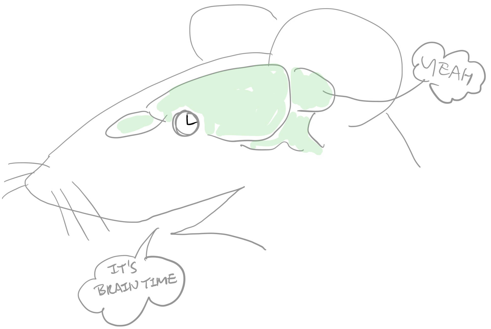
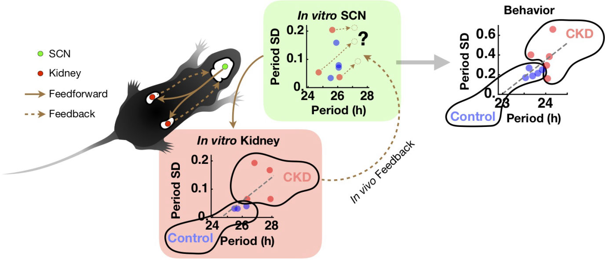
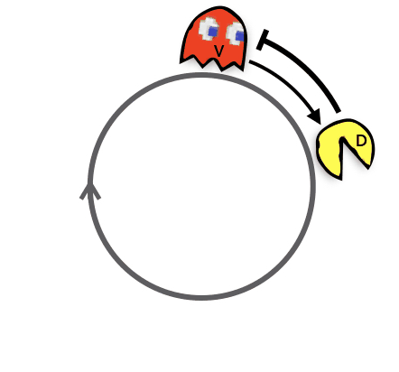

Circadian neuroscience
At Braintime Lab,
we study time in the brain at multiple scales: from milli-seconds to π⋅107 seconds.
We study how time is represented in the brain, using experimental animal models and computational methods. Our primary focus has been the neural circuits of circadian clocks that make up the seasonal (yearly) clock. These physiologically relevant circadian processes connect to cognitively relevant seconds-to-minutes scale events in the brain.

Braintime LabOur projects
Time across scales
Sociology of body clocks
Interaction between the master circadian clock and peripheral clocks
It turns out that the suprachiasmatic nucleus (SCN) is not the only circadian clock in the body. We recently found that the choroid plexus clock exceeds even the SCN clock in terms of robustness (2018) and the kidney clock can influence the behavioral circadian rhythms, potentially through feedback to the master clock (2019). These investigations recast the role of the SCN as the master coordinator of the distributed local circadian clocks, rather than the master pacemaker, and let us think that the circadian organization of the body is likely more democratic and less strictly hierarchical than previously thought.

· The role of the multiplicity of circadian clocks in mammalian systems (2025, Sleep Medicine review)
· The kidney clock contributes to timekeeping by the master circadian clock (2019)
· The choroid plexus is an important circadian clock component (2018)
The circuit of circadian clocks
